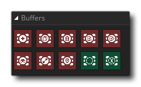

Un tampon est une région de mémoire physique utilisée pour stocker temporairement des données pendant qu'elles sont déplacées d'un endroit à un autre ou manipulées d'une manière ou d'une autre, par exemple vous pouvez utiliser un tampon pour contenir des données d'état de jeu. GameMaker Studio 2 comporte un certain nombre d'actions spécifiques liées à la création, la modification et le chargement / l'enregistrement des tampons, mais avant de les utiliser, veuillez noter les points suivants:
- Lorsqu'un tampon est créé, il est automatiquement effacé et rempli à 0.
- L'argument "taille" des fonctions de tampon fait toujours référence à la taille en octets du tampon.
- Les tampons DnD™ sont toujours alignés sur 1 octet. L '"alignement" fait référence à la façon dont les données sont stockées dans un tampon et est utilisé lors de l'utilisation des fonctions du tampon GML, mais pour le glisser-déposer, ce n'est pas pertinent.
- Les données dans les tampons sont lues et écrites de manière séquentielle (ex: vous appelez l'action Write Buffer trois fois, puis il écrit les premières données, avance, droite les deuxièmes données, avance et écrit les dernières données), avec quelque chose appelé la valeur "seek" pour vous dire où dans la mémoire tampon aura lieu la prochaine lecture / écriture.
- Toutes les données sont écrites dans le tampon et renvoyées à partir du tampon sous la forme d'une chaîne. Si vous avez stocké des nombres réels, vous devrez utiliser l'une des actions de type de données pour le convertir de la chaîne en valeur.
La mémoire utilisée pour créer des tampons est la mémoire système, donc même lorsque le jeu n'a pas de focus, toutes les données stockées dans un tampon devraient être sécurisées, cependant si l'application est fermée ou redémarrée, elle sera perdue. La page suivante explique comment les tampons fonctionnent dans le contexte de GameMaker Studio 2 et contiennent quelques exemples de code GML:
La bibliothèque de tampon a les actions suivantes:
 | Créer un tampon |
 | Copier le tampon |
 | Supprimer le tampon |
 | Lire le tampon |
 | Ecrire un tampon |
 | Rechercher tampon |
 | Obtenir la taille du tampon |
 | Obtenir la position du tampon |
 | Si le tampon existe |
 | Si End Of Buffer |